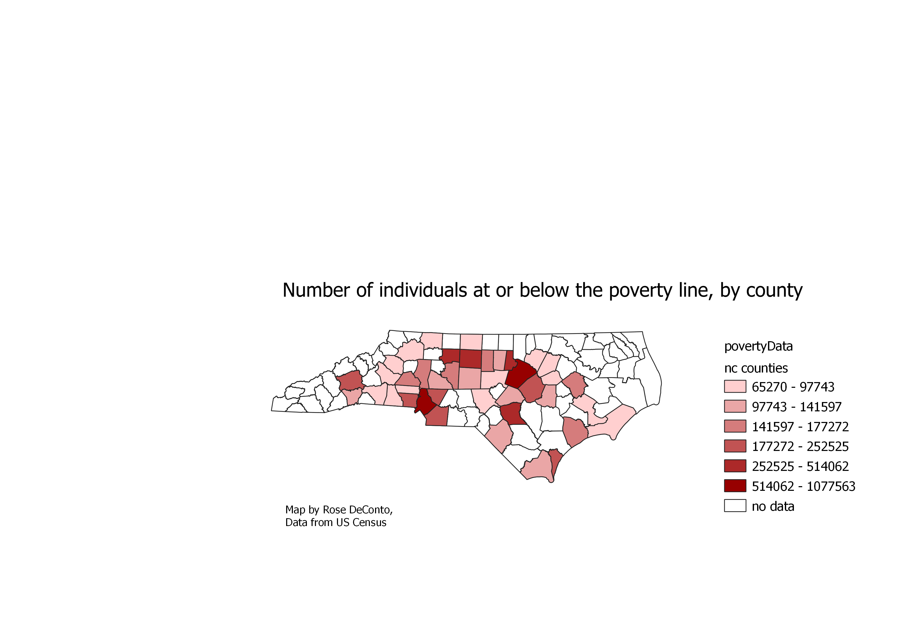

Homework 6: Census data choropleth
Rose DeConto
Individuals at or below the poverty line, by county, in North Carolina

child poverty as a percentage of total poverty, in three different distributions:


Clearly, natural breaks is the best way to display this data. Logarithmic makes the least sense and is the least useful/ I made my ratio by dividing the number of persons under 18 in poverty by the total number of persons in poverty.
Data used for this project
CSV dataset
Link to shapefile